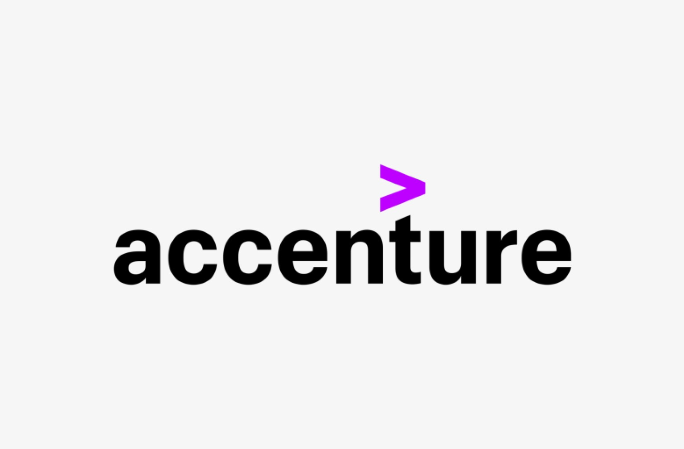

/images/hero image.png)
/IMAGES/3.jpg)



UX Engineering Analyst Intern | Accenture
Accenture
- Designed a modular Data Visualization system with scalable components, Figma tokens, and accessibility compliance.
- Collaborated with agile engineering and design teams to prototype and deliver presentation-ready assets for enterprise clients.
- Strengthened expertise in design systems, data visualization, and scalable brand customization across digital products.